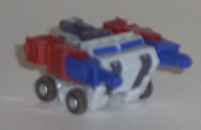
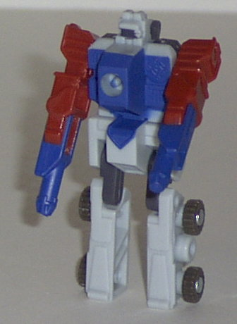
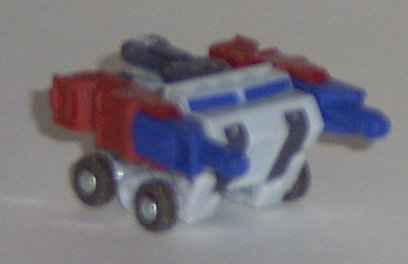
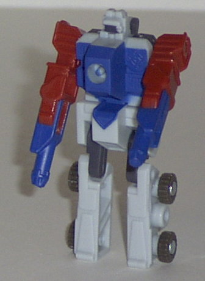
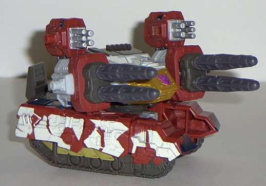
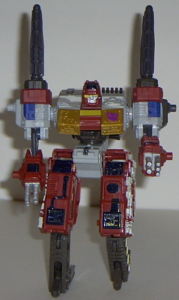

Blackout
(Powerlinx)
Blackout
(Powerlinx)
 
Allegiance : Minicon
Size : Mini-Con
Difficulty of Transformation : Very Easy
Color Scheme : Bluish white, dark flat watery blue, brick red, and some dark brownish gray
Rating : 6.4
(NOTE: Because this set is a repaint, this is not a full-blown review. This mainly covers any changes made to the set and the color scheme, and merely compares it to the original Demolishor w/ Blackout. For a review on the mold itself, read the review of Armada Demolishor w/ Blackout here .)
Blackout
(Powerlinx)


Allegiance
: Minicon
Size
: Mini-Con
Difficulty of Transformation
: Very
Easy
Color Scheme
: Bluish white, dark
flat watery blue, brick red, and some dark brownish gray
Rating
: 6.4
Powerlinx Blackout's
color scheme is da bomb, dawg. All that dark blue and bluish "icey" white
go together like double chocolate ice cream and yo mama. The red is also
a nice accent col-ah, although the dark brownish gray dudn't seem to be
quite as trippin' this time, since da exact same col-ah was used on Blackout's
previous scheme. What's kinda cool is dat Powerlinx Blackout seems to be
from da element of ice while the original Blackout was all fiy-ah and junk.
No mold changes have
been made to Powerlinx Blackout.
Powerlinx Blackout beats
out the original Blackout fo' sho'. He'd be like, my main Minicon, if it
wuddn't for his borin' transformation and robot mode, know what I'm sayin'?
Some diffr'nt paint apps would be sweet, too.
 Demolishor
(Powerlinx)
Demolishor
(Powerlinx)


Allegiance
: Decepticon
Size
: Super-Con
Difficulty of Transformation
: Medium
Color Scheme
: Brick red, dark brownish
gray, bluish white, snowy white, and some dark flat watery blue, dull gold,
yellow-gold, yellow, silver, and shiny black
Powerlinx ports
: 4 (1 gimmicked)
Rating
: 9.4
Powerlinx Demolishor's
col-ah scheme is just as fly as his Minicon buddy's is, foo. He's also
got that arctic camo think goin' on, although he has more o' dat brick
red in his scheme than Blackout did. Still, it works for Powerlinx Demolishor,
since he'd be a major playah hatah if he had no dark contrast col-ahs for
his light ones. This boy also has some great new paint apps that his little
bro didn't, like some patches a' white on his sides, and the top of his
chest looks like a blizzard blew across it, makin' it look wicked, dawg.
The gold on da chest and da extra silver, blue, and yellow paint apps also
help add some eye candy to his bod, too. Still, just like with Powerlinx
Blackout, that dark brownish gray is the same exact col-ah that it was
on the previous version. That just ain't cool. Somethin' else- like more
of that dark blue- woulda been sweet.
No mold changes have
been made to Powerlinx Demolishor.
Powerlinx Demolishor
is even bettah with an arctic and brick red camo. He can shizzle the nizzle
right outta the previous one, and even then, dey both worth pickin' up.
I wish he wuddn't so hard ta find, though....
No Stats
Review by Beastbot
(NOTE: My heartfelt apologies for sucking any coolness right out of urban street talk. It was a spur-of-the-moment thing, really. Sorry.)